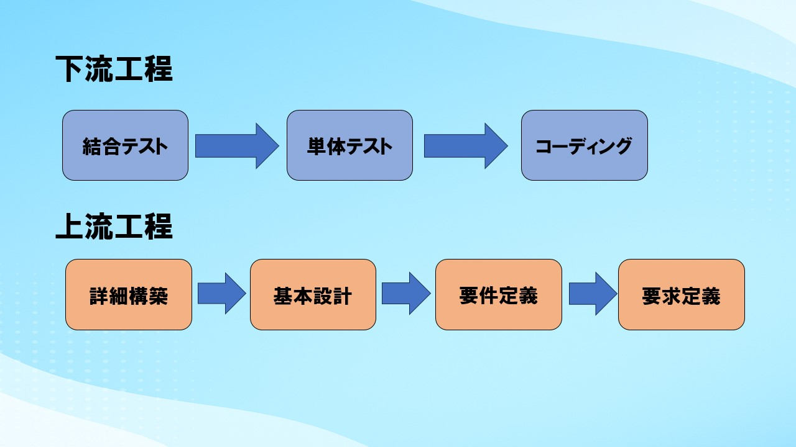
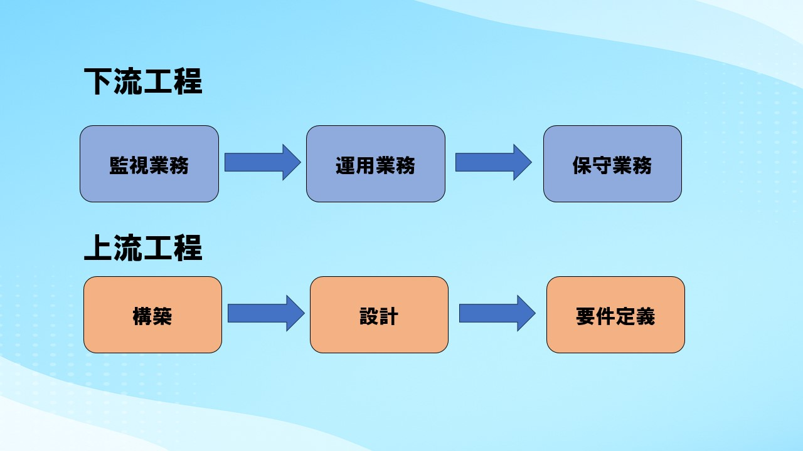
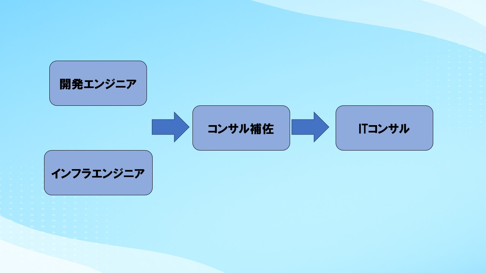
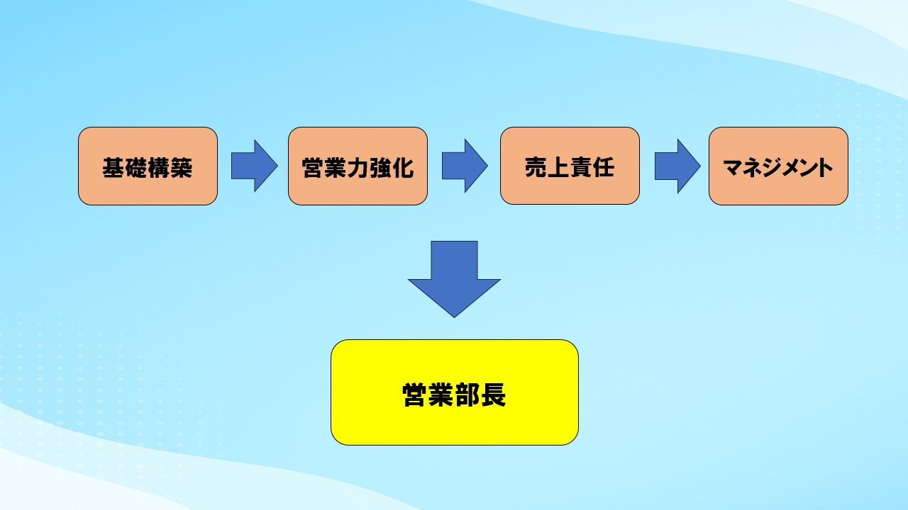

5. 組織図
-
岡田代表取締役-
エンジニアリング事業部部長5名
マネージャー18名
エンジニア -
営業部部長
営業: 4名 -
人事部部長
採用: 1名
教育: 2名 -
経理部部長
-
-
エンジニアリング事業部
-
第一事業部部長
マネージャー: 4名-
エンジニア
-
-
第二事業部部長
マネージャー: 4名-
エンジニア
-
-
第三事業部部長
マネージャー: 4名-
エンジニア
-
-
第四事業部部長
マネージャー: 4名-
エンジニア
-
-
第五事業部部長
マネージャー: 2名-
エンジニア
-
-
6. キャリアフロー
当社では、多様なキャリアパスを用意し、あなたの成長を全力でサポートします。
インフラエンジニアのキャリアフロー
開発エンジニアのキャリアフロー
コンサルエンジニアのキャリアフロー
営業のキャリアフロー
7. 先輩社員の声
 J.Iインフラエンジニア / 2022年5月入社
J.Iインフラエンジニア / 2022年5月入社Q. IT未経験でも、現場で活躍できるようになりますか？
IT未経験からのスタートでしたが、今ではコールセンターシステムのクラウド移行プロジェクトに携わり、業務改善に貢献しています。
Q. スピンの魅力とは？
スピンには“人が人を育てる”文化があります。悩みに寄り添い、一緒に考えてくれる仲間の存在が、自分を成長させてくれました。答えを教えるのではなく、共に考える。そんな時間を通じて、技術だけでなく「人としての力」も身につきました。スピンの掲げる「技術力 × 人間力 = プロフェッショナル」は、まさに現場で実感する姿勢そのもの。信頼される技術者として、自信を持って仕事に取り組めています。誰かの役に立ちたい。未経験でも挑戦したい。――そんな想いを持つ人にとって、スピンはきっと、人生を変えるスタート地点になるはずです。
 K.Nインフラエンジニア / 2022年6月入社
K.Nインフラエンジニア / 2022年6月入社Q. ～調整中～
～調整中～
Q. ～調整中～
～調整中～
 R.K開発エンジニア / 2022年1月入社
R.K開発エンジニア / 2022年1月入社Q. ～調整中～
～調整中～
Q. ～調整中～
～調整中～
 T.Uコンサルエンジニア / 2022年3月入社
T.Uコンサルエンジニア / 2022年3月入社Q. 異業種からIT業界への転職に不安はありましたか？
建築現場での施工管理から、まったくの未経験でITコンサルタントへ転身しました。最初は専門用語もわからず不安ばかりでしたが、先輩や仲間が寄り添ってくれたおかげで、ひとつひとつ壁を乗り越えてこられました。
Q. 仕事をするうえで心がけていることは？
わからないことは素直に聞き、学んだことを行動で返す。その積み重ねが信頼へとつながり、気づけば“現場で頼られる存在”に少しずつ近づいていると実感しています。 必要なのは、特別なスキルよりも行動力と人との関わりを大切にする姿勢。そんな自分を育ててくれた環境に、今は感謝しかありません。
8. SPINTECHNOLOGYのMVV
Mission
ITで人を育て、お客様と志を共にする未来を創る
Vision
「技術力 × 人間力」 = プロフェッショナル
社会に貢献できる真のプロフェッショナルを育てられる会社
Value
- 誠実：行動と言動に責任を持って真面目に向き合うこと
- 素直：他人からの意見を受け入れ、己を見直したり改善すること
- 挑戦：失敗や困難を恐れず新しいことに果敢に行動する姿勢
9. ビジネスモデル
- システムインテグレーション
設計から運用までの一貫したサービスソリューションの提供 -
受託開発サービス
生成AI活用支援、Webサイト、LP、ECサイト制作から、各種Webシステム、業務システム、スマートフォンアプリ開発まで、お客様の多様なニーズにお応えする受託開発を幅広く手がけています。 -
IT教育サービス
ITスクール事業や企業向けIT研修を通じて、実践的なITスキルや知識習得の機会を提供し、社会全体のIT人材育成に貢献しています。 -
運用・保守サービス
開発したシステムや既存のIT資産が安定的に稼働し続けるよう、確かな技術力に基づいた運用・保守サービスを提供し、お客様のビジネス継続を力強く支えます。
現在は上場企業「ボードルア」グループの一員として、安定した経営基盤と信頼性の高いネットワークを活かしながら、自社独自の技術力と柔軟性を発揮できる環境を整えています。
今後さらなる成長に向け、新たな仲間を募集しています！
10. 組織文化
スピンの組織文化とは？
- 未経験からプロフェッショナルを目指せる、人を育てる文化があり、充実した研修制度や一人一人が多様な仕事に挑戦し成長できる環境が整っている。
- 役職や立場に関わらず、フラットに意見交換ができる風通しの良い組織。社員同士の距離が近く活発なコミュニケーションを通じて互いを高め合える文化がある。
組織文化（研修）
- ビジネス研修（思考編～、行動編～）
- キャリア研修（インフラ・開発・コンサル）
- マネジメント研修
- 知識研修（インフラ・開発・コンサル）
- 技術研修（インフラ・開発・コンサル）
ビジネス研修
組織文化（部活）
- 健康や日々のリフレッシュする
- 社員同士の交流を通して悩み事やキャリア相談をしやすい雰囲気作りをする
- 社員が定着し、共に成長できる場所
野球部
ダーツ部
組織文化（レクリエーション）
- 様々なレクを毎月1〜2回開催
BBQレク（年2回：夏開催）
社員旅行
11. 会社の雰囲気（動画）
SPINTECHNOLOGYの活気ある職場環境や社員の様子をご紹介します。
12. 会社の強み
-
会社に対する自信
当社は、明確なビジョンに基づいた事業戦略と、変化を恐れず挑戦し続ける企業文化により、持続的な成長を実現しています。信頼できるITパートナーとして、お客様と共に未来を創造します。 -
事業に対する自信
お客様の真の課題解決を目指し、より上流工程からビジネスに貢献する一次請けとしての事業を強化しています。社会のニーズに応える革新的なITソリューションを提供できることに自信を持っています。 -
商品・サービスに対する自信
高い技術力と豊富な経験を持つプロフェッショナル集団が、お客様のビジネスを加速させる高品質かつ信頼性の高いITサービスを提供いたします。私たちが提供する価値に、絶対の自信を持っています。 -
社員（自分たち）に対する自信
当社の社員は、自身の成長に情熱を燃やし常に最高のパフォーマンスを目指すプロフェッショナルです。充実した教育・サポート体制のもと、日々進化を続ける私たちの「人」こそが、最大の強みであり、お客様の成功への鍵となります。
13. 福利厚生と制度
※一部抜粋
- 年間休日125日 （完全週休2日制（土日休み）＋GW/夏季/年末年始/慶弔休暇/育児休暇/ハネムーン休暇）
- 資格取得支援制度（受験料・研修費全額補助）
- 研修費無料のITスクール付き
- 社内SPIN大会やゲームスペースで気軽に交流。仕事後にリフレッシュできる文化
自分のペースで成長できる環境があります！！
14. 私たちの目指す未来
-
お客様と共にビジネスの未来を創る
お客様とのパートナーシップを強化し、ビジネス成長に不可欠なITソリューションを提供します。
真のニーズを深く理解し、迅速かつ柔軟な課題解決で、お客様と共に成功を追求します。 -
個の成長がチームの力に輝けるプロフェッショナルへ
一人ひとりの成長と活躍を最大限に支援し、技術力と人間力を兼ね備えたプロフェッショナルを育成します。
やりがいを持って挑戦できる環境で、社員の幸福度とお客様への価値提供を高めます。
未経験でも安心して成長できる教育・サポート体制が整っています。 -
ITでより良い社会の実現へ貢献
私たちのMissionとVisionには、ITの力で社会に貢献したいという強い想いがあります。
人材育成と技術革新を通じ、お客様、そして社会全体の発展に貢献し続けます。
15. まとめ
- SPIN TECHNOLOGYは、成長意欲と挑戦する心を大切にする会社です。
- 未経験からでもプロフェッショナルを目指せる教育・サポート体制があります。
SPIN TECHNOLOGYは、あなたの成長意欲と挑戦する心を何よりも大切にします。私たちのビジョンに共感し、共に未来を創っていきたいと感じた方は、ぜひご連絡ください。社会の未来を、私たちと共に創りましょう！
16. 採用情報とお問い合わせ
- 公式ホームページ
https://spintechnology.jp?hl=ja - 公式Instagram
https://www.instagram.com/spintec.official// - 26卒の説明会はこちら
https://job.mynavi.jp/26/pc/corpinfo/displaySeminar/index?optNo=S1YStC&corpId=271969
ご質問があれば、お気軽に採用担当へお問い合わせ・ご連絡ください。
スマートフォンでQRコードを読み込んでください